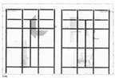
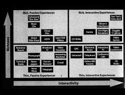
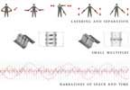
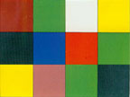
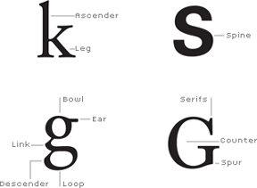
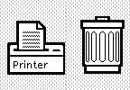
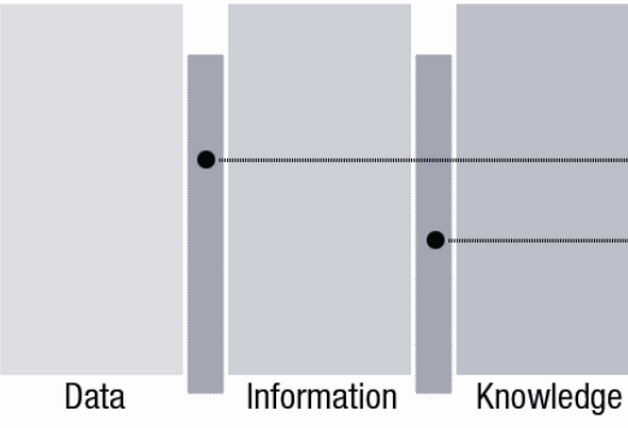

graphic space

Philip B. Meggs,
Type and image: The language of graphic design, John Wiley & Sons, 1992, 69-73, 80-89, 92.
In this reading you will learn about grid structures. While sometimes grids are explicit,
in almost all other cases of good visual design, they operate implicitly, lurking beneath the surface.
The examples, as well as the principles, can serve as a basis for your own ideas.
information design

Clement Mok,
Designing business: Multiple media, multiple disciplines,
Macmillan Publishing Co., Inc., 1996, 102-106, 114-123.
layering and separation

Edward Tufte,
Envisioning Information, Cheshire, CT: Graphics Press, 1990, 37, 46-47, Layering and Separation, 101-106.
Layering is a means for structuring the presentation of large amounts of information,
in order to promote readability. It is a means for grouping elements into levels,
and facilitating coherent readings of the levels. Tufte's book contains beautiful examples and clear analysis.
color

Johannes Itten,
The Art of Color, NY: Van Nostrand Reinhold, 1970.
type

Rob Carter, Philip B. Meggs, and Ben Day,
Typographic design: Form and communication,
John Wiley & Sons, 2011, 27, 30, 32-42, 50-55, 60-61, 72-74.
Richard Hollis,
Swiss graphic design,
Laurence King Publishing, 2006, 197-201, 64-67, 70-71, 222-223.
affordances
design thinking

Rheinfrank and Evenson,
Design Languages, Bringing Design to software,
Ed. Terry Winograd, Vol. 86, NY: ACM Press, 1996.

Jon Kolko,
Information architecture and design strategy: The importance of synthesis during the process of design,
Industrial Designers Society of America Conference, 2007, 17-20.